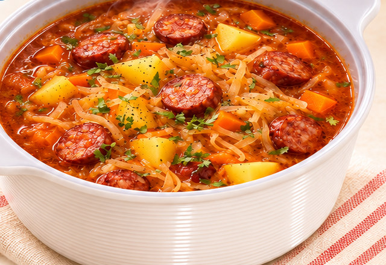

РЕЦЕПТ 01
Деревенский суп с говяжьими колбасками и капустой
Сытный, с томатами и лёгкой кислинкой
🍽 4 порцииДомашний рецепт
Посмотреть карточку с рецептом
Ингредиенты и приготовление
Что понадобится
- Говяжьи колбаски без свинины — 300 г
- Картофель — 3 шт.
- Квашеная капуста — 200 г
- Лук — 1 шт.
- Морковь — 1 шт.
- Томатная паста — 1 ст. л.
- Вода или бульон — 1,5 л
- Чеснок — 2 зубчика
- Масло, соль, перец и зелень — по вкусу
Как приготовить
- Колбаски нарежьте кружочками и слегка подрумяньте в кастрюле с маслом.
- Положите нарезанные лук и морковь, готовьте ещё несколько минут.
- Влейте бульон, добавьте картофель и варите почти до мягкости.
- Положите капусту и томатную пасту, варите ещё 10–15 минут до желаемой мягкости капусты.
- В конце добавьте чеснок, зелень и специи.
Совет: Выбирайте колбаски с проверенным мясным составом, без свинины. Кислую капусту вводите после того, как картофель почти сварился.